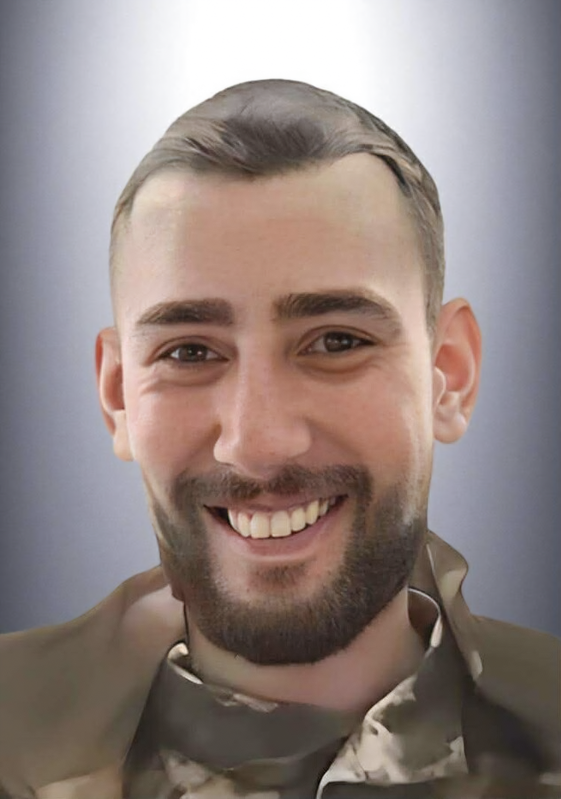

Його історія бере початок 20 листопада 1994 року у Львові. Саме у цей день народився Михайло Прихідько — людина, чиєму подвигу ми завдячуємо життям. Михайло був щирим і вірним другом, із цікавим почуттям гумору, з великими мріями й життєвими планами. Сьогодні він із щирою посмішкою дивиться на нас із портрета, оповитого чорною стрічкою, бо поле бою забрало його життя, аби ми могли з посмішкою на обличчі проживати своє.
Його дитинство проходило не так, як у дітей зараз, адже про існування ґаджетів тоді й мови не було. Єдина розрада — двір, футбольний м’яч і компанія таких самих дітлахів, які проживають свої безтурботні, найкращі часи.
З самого малечку був відкритою та компанійською людиною: захоплювався футболом, збирав футбольні картки, а у старшому віці полюбляв компʼютерні ігри.
Разом із двоюрідним братом Олегом, який був йому мов рідний, відвідував секцію з футболу та грав у клубах. Проте через наявні перешкоди, пов’язані з навчанням, досягти задуманих вершин не вийшло.
«Приблизно у 8 років нам купили перші футбольні форми збірної України: у мене був номер 9 — Олег Гусєв, а у брата 10 — Андрій Воронін. І ми, сповнені ентузіазму, одразу побігли грати у футбол», — щирим спогадом про дитинство ділиться брат Михайла.
На всіх етапах життя Михайло дуже легко знаходив спільну мову з оточенням, але водночас міг тримати людей на відстані, пізнаючи їх й аналізуючи, чи стануть у майбутньому товаришами. «У нього дуже гарне почуття гумору було і йому це дозволяло прям гори звернути», — згадує брат Олег.
Одногрупник Михайла Віталій про його відкритість: «Не було таких ситуацій, щоб я бачив, що він мав якісь переживання чи сумував. Це була завжди відкрита і позитивна людина». Брат Михайла ж стверджує, що лише вузьке коло людей, яке спілкувалося з ним, могло розуміти і знати, що у нього щось сталось. Іншим свої емоції не любив показувати, загалом був мегапозитивною людиною.
По життю мав чітко окреслену гармонію з самим собою. Був дуже цілеспрямованим: поставив ціль — докладав усіх зусиль до її втілення і потім сяяв від результату.
У школі був так само привітним: мріяв, досягав та випромінював добро. Був активним учасником спортивних змагань як у школі, так згодом і у вищих навчальних закладах.
Також симпатизував багатьом дівчатам: «Дівчата у школі називали його зозулька. Я цього ніколи не забуду, бо це момент, який гріє душу. Вони там щось робили і дівчинка сказала: “Ой, який зозулька милий”. Цей момент запам’ятавсь на все життя», — милим спогадом ділиться Олег, з яким Михайло також вчився у школі.
Проте шкільні роки минають, і попереду — широкий шлях вибору професії, вишу та складання ЗНО. Додатковим предметом Михайло обрав англійську мову, але, на жаль, саме вона підвела зі вступом до університету. Тому у 2012 році доля привела його до Львівського поліграфічного фахового коледжу на спеціальність «Комп’ютерна обробка текстової, графічної та образної інформації».
У коледжі так само не втрачав позитиву, одногрупники відгукуються про нього тільки з хорошого боку, називаючи дуже відкритим та компанійським. «Цікаве почуття гумору мав, я б сказав не стандартне навіть, але цікаве це точно», — згадує одногрупник Віталій.
Після коледжу вступив до Української академії друкарства на спеціальність «Видавництво і поліграфічна справа», де був активним студентом, брав участь у різних проєктах і заходах, особливо спортивних.
Після здобуття вищої освіти за фахом практично не працював, оскільки не міг знайти роботи з гідною оплатою, тому обрав готельно-ресторанний бізнес. Спочатку працював звичайним сушистом, а згодом був підвищений до су-шефа. Тривалий час працював у Львові, а згодом — і в Польщі. У лютому 2022 року на декілька тижнів повернувся до України і вже мав їхати назад, як почалося повномасштабне вторгнення. Кордони закрили, і всю країну охопив страх війни.
Свій шлях у лавах Збройних сил України він розпочав у січні 2025 року, відколи його мобілізували. Пройшов медкомісію у Львові й практично того самого дня був відправлений до Житомира на проходження БЗВП (базової загальновійськової підготовки), після чого обрав посаду оператора БпЛА.
«Про те, що він почав служити я дізнався не одразу, це було від наших спільних одногрупників і ми старались йому допомогти у тій мірі, якій міг кожен з нас», — про те, як дізнався про службу Михайла, згадує Віталій.
Позивний Михайла був пов’язаний з його професійною діяльністю — «Шеф». Проте спочатку його кликали «Діловодом», оскільки він зголосився бути старшим, ще під час проходження БЗВП, але згодом за ним усе ж таки закріпився позивний «Шеф».
Згодом розпочав захищати Батьківщину у складі 77-ї окремої аеромобільної Наддніпрянської бригади Десантно-штурмових військ Збройних сил України, боронячи рідну землю на Херсонському напрямку.
Після закінчення війни мріяв опановувати нові технології, зокрема 3-D моделювання, і хотів пов’язати своє життя з цією сферою, яка особливо зацікавила його. Але сталося неминуче. Михайло загинув 7 лютого 2026 року у 31 рік. Разом із ним відійшли у вічність його мрії та душа, доброта якої залишила теплий слід у серці кожного, хто спілкувався з Михайлом.
У кривавому полум’ї війни горить цвіт нації, проте допоки ми про них пам’ятаємо і говоримо, доти вони будуть живі для нас.
Хотілося б, аби ви згадували Михайла з такою самою посмішкою, з якою він дивиться на нас із портрета. Таким же добрим і відкритим, яким він був за життя, і з чудовим почуттям гумору.
Вічна пам’ять і слава Герою, чиє життя забрало російське вторгнення.
Підготувала студентка спеціальності «Журналістика» Марія Примак.